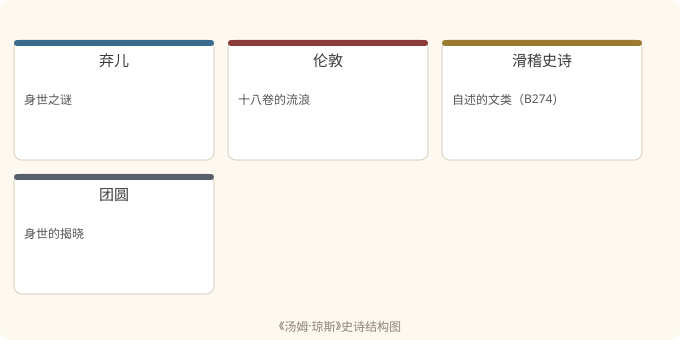

汤姆·琼斯
一、基本信息
| 作者 | 亨利·菲尔丁 |
|---|---|
| 成书/出版 | 1749年出版（Britannica：Tom Jones……is a famous comic novel by Henry Fielding published in 1749） Henry Fielding — Encyclopaedia Britannica（百科全书） |
| 国别/地区 | 英国 |
| 时代 | 近代 · 18世纪 |
| 体裁 | 长篇小说 |
| 语言 | 英语 |

《汤姆·琼斯》史诗结构图（主题·结构图）
二、创作背景
Britannica（B274）：'a famous comic novel'；'Fielding's detailed planning and structure made Tom Jones a literary masterpiece'（精心的规划与结构使其成为文学杰作——B274）。
前言自述（B274）：'a comic Epic-Poem in Prose'（散文体滑稽史诗）。
司各特（B274）：'father of the English novel'。
三、内容脉络
弃儿汤姆的流浪与身世之谜：从乡绅家到伦敦的十八卷（通说待核）。
索菲娅的出走与团圆（通说待核）。
四、主要人物表
| 人物 | 身份 | 说明 |
|---|---|---|
| 汤姆·琼斯 | 弃儿 | 热情的浪子 |
| 索菲娅 | 乡绅之女 | （通说待核） |
| 布利非 | 伪君子表弟 | （通说待核） |
五、主题与艺术特点
- '散文体滑稽史诗'（B274：comic Epic-Poem in Prose——前言自述）。
- 结构与规划的典范（B274：detailed planning and structure）。
- 人性的全光谱（通说）。
六、影响与评论
- Britannica：'literary masterpiece'；'father of the English novel'（B274）。
Henry Fielding — Encyclopaedia Britannica（百科全书） - 作者页：菲尔丁现实主义传统（B274）。
Henry Fielding — Encyclopaedia Britannica（百科全书）
七、阅读建议
难点
- 十八卷结构。
- 18世纪英语叙事口吻。
- 《汤姆·琼斯》（人民文学出版社黄乔生译本？——通说待核）。
- 英文原版（公有领域）。
英国18世纪小说首选（与《鲁滨逊》并列）。
八、待核实
- 1749年2月出版核对。
- 汤姆/索菲娅/布利非人名核对。
- 黄乔生译本信息待核。
本页主要来源
亨利·菲尔丁的其他收录作品：汤姆·琼斯